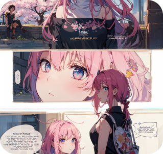
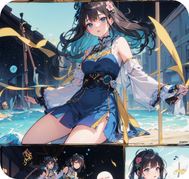
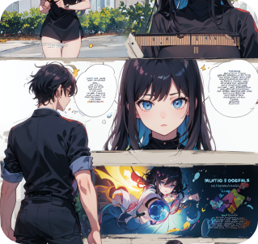
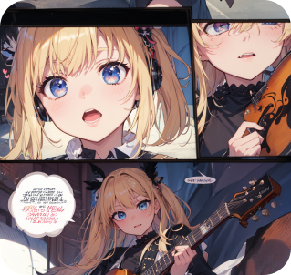

Популярные работы

"Eternal Sakura" - захватывающая история о девушке, которая обнаруживает в себе
способность контролировать время с помощью магической сакуры. Она отправляется в
путешествие в мире магии и приключений, чтобы разгадать тайну своих сил и
защитить своих близких. С уникальным стилем рисования и глубокими персонажами,
"Eternal Sakura" завораживает своих читателей и погружает их в увлекательный мир
фэнтези.

"Melody of Souls" - музыкальная манга, рассказывающая историю молодого музыканта,
который обнаруживает, что его мелодии способны вызывать магические эффекты. Он
присоединяется к группе музыкантов, чтобы сражаться с силами зла и использовать
свои музыкальные способности для защиты мира. "Melody of Souls" погружает
читателей в увлекательный мир музыки и приключений, с сочными изображениями и
проникновенной эмоциональной атмосферой.

"Cyber Sirens" - киберпанк-манга, рассказывающая историю о группе молодых хакеров,
которые борются за свободу и справедливость в виртуальном мире. Со
стильными и динамичными рисунками, "Cyber Sirens" представляет мрачный и
технологичный мир будущего, где главные герои сражаются с корпоративными
заговорами и виртуальными опасностями. Эта манга захватывает читателей своим
атмосферным стилем и захватывающими поворотами сюжета.

"Starstruck" - романтическая манга, рассказывающая историю о двух звездных певцах,
которые встречаются на сцене и влюбляются друг в друга. С легким и мечтательным
стилем рисования, "Starstruck" погружает читателей в мир музыки и романтики,
передавая эмоции и историю через прекрасные изображения и диалоги. Эта манга
переносит читателей в мир звездного блеска и страстной любви.